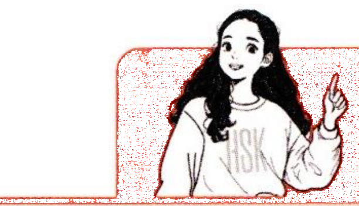

一、语音PronunciationФонетика 4-1
1两个三声音节的连读变调Tone Sandhi in Two Consecutive Third-Tone SyllablesСанди тонов в двух последовательных слогах третьего тона
两个三声（ˇ）音节连读时，第一个三声读成二声，即214+214→35+214。When two third-tone (ˇ) syllables occur in succession, the first is pronounced as a second tone, i.e., 214+214→35+214.Когда два слога третьего тона (ˇ) идут подряд, первый произносится вторым тоном, т.е. 214+214→35+214.
大声拼读。注意三声变调。Spell and read aloud. Note the sandhi of the third tone.Прочтите вслух по слогам. Обратите внимание на санди третьего тона.
词语/短语Words/PhrasesСлова/Фразы
拼音PinyinПиньиньˇ + ˇ → ´ + ˇ
здравствуйте
где
можно
Сяоюй
очень хорошо
先跟读，再大声朗读。注意三声变调。Listen and repeat, then read aloud. Note the sandhi of the third tone.Сначала послушайте и повторите, затем прочтите вслух. Обратите внимание на санди третьего тона.